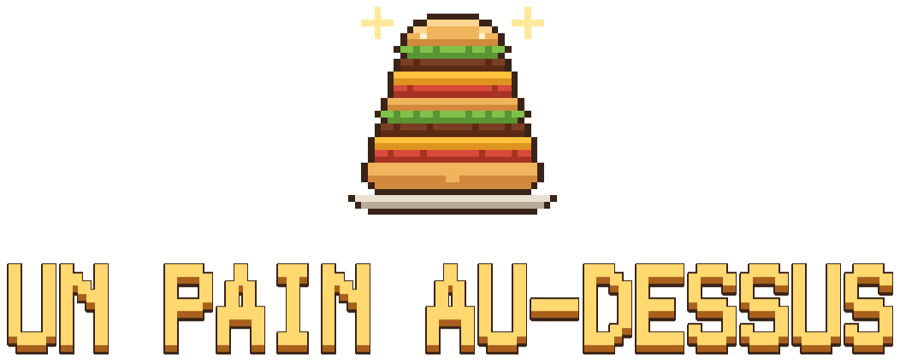
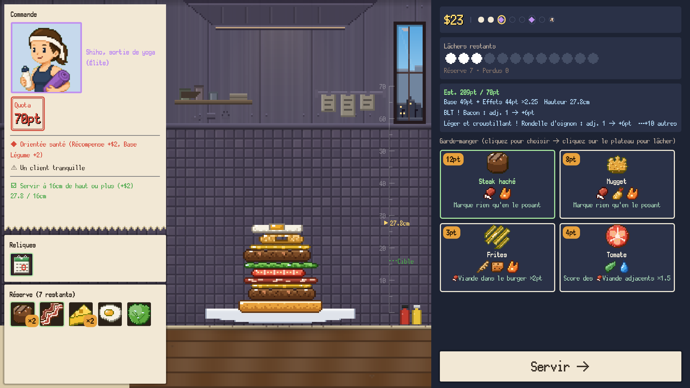
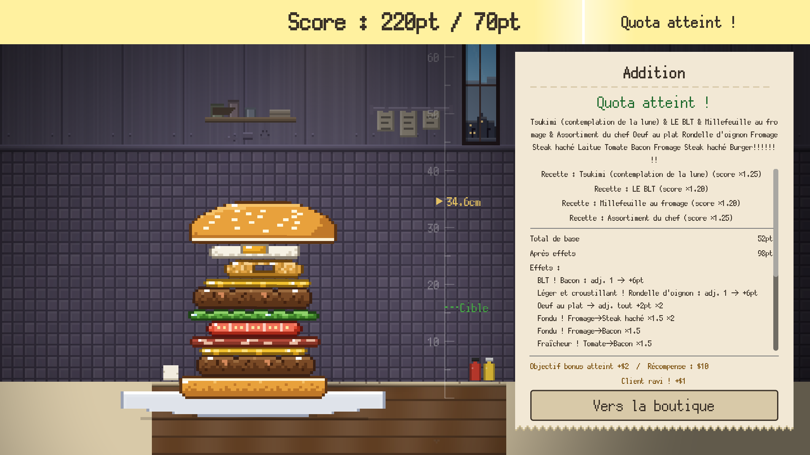
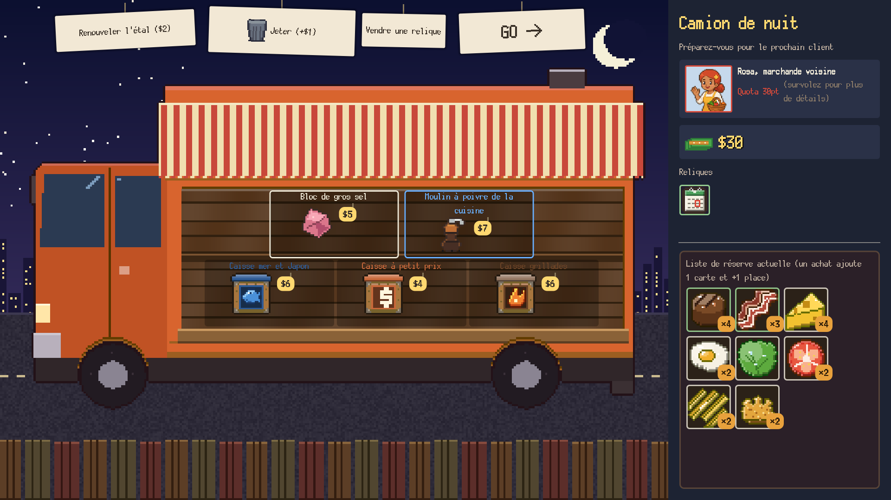

Lâche-le ! Empile-le ! Coince-le pour la synergie !
Un roguelike de burgers à la physique réelle
Ajouter à ma liste de souhaits SteamSortie prévue au 4e trimestre 2026 / Windows (Steam)
C'est quoi ?
Un pain au-dessus est un roguelike deckbuilding où tu empiles des burgers avec une vraie physique.
Tu tiens le stand à burgers. Chaque client annonce un quota, et tu montes le burger pour l'atteindre, en direct, sur l'assiette. Seul problème : les ingrédients obéissent à la physique. Viser la chute et garder la tour debout, c'est à toi de jouer. Les ingrédients voisins déclenchent des effets en chaîne : plus la pile est haute et nette, plus le score grimpe.
Déroulement d'une partie

Viser et lâcher
Lâche les ingrédients de ta main sur l'assiette en visant, et déclenche des synergies entre voisins. Ils roulent, penchent et s'écroulent.

Coincer pour la synergie
Pose le pain du dessus pour servir et être noté. Les effets des voisins s'enchaînent et le score s'envole. Quota manqué, c'est game over sur-le-champ.

Le food truck de nuit
Chaque client servi ouvre le food truck de nuit (la boutique) : achète des caisses et des reliques, et jette les ingrédients inutiles. Satisfais le boss final pour l'emporter.
Ce que tu empiles
- Plus de 90 ingrédientsPoints, multiplicateurs, réceptacles. Chaque effet regarde le voisin
- Plus de 30 recettesLa bonne combinaison donne un multiplicateur sur tout le burger et débloque de nouveaux ingrédients
- Plus de 40 reliquesEffets permanents qui boostent des tags entiers
- 8 chefsPain signature et réserve de départ
- Des clients qui ont du caractèrePréférences, dégoûts, os. La commande change à chaque fois
- Plus de 70 succèsAvec un Codex et un Album de burgers
Fais tes preuves
Le rang du resto ★0–5 et le Chef confirmé (le point de largage oscille tout seul) relèvent la difficulté. Les scores du défi du jour et des heures sup se disputent dans les classements Steam.
{kind=link}
{kind=link}
{kind=link}
{kind=link}
{kind=link}
Infos sur le jeu
- Titre
- Un pain au-dessus
- Aussi connu sous
- A Bun Above / いただきバーガー
- Genre
- Empilement physique × roguelike deckbuilding
- Développeur / éditeur
- NoZworks
- Plateforme
- PC (Steam) / Windows 10 et 11 (64 bits)
- Sortie
- 4e trimestre 2026 (prévue)
- Langues
- Français / 日本語 / English / 简体中文 / 繁體中文 / 한국어 / Deutsch / Español / Português (Brasil) / Русский
Ajoute-le à ta liste de souhaits pour ne pas rater la sortie
Voir la page Steam